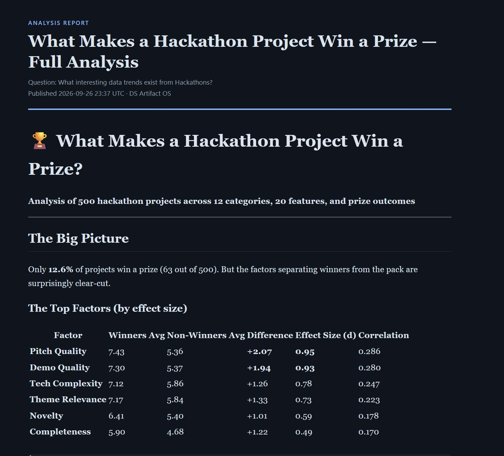

for data scientists & analysts
An MCP server that keeps your coding agent's queries, datasets, charts, and narratives organized as versioned, searchable artifacts — so your analysis stops scattering across notebooks, chat scrollback, and one-off scripts.
watch the full recording ↗
$ pip install "git+https://github.com/zixiaoshawnshi/DataScientist-OS.git@latest" $ claude mcp add dsos -s user -- python -m dsos.mcp_server
$ pip install "git+https://github.com/zixiaoshawnshi/DataScientist-OS.git@latest" $ pi install npm:pi-mcp-adapter # then add to ~/.config/mcp/mcp.json { "mcpServers": { "dsos": { "command": "python", "args": ["-m", "dsos.mcp_server"] } } }
$ pip install "git+https://github.com/zixiaoshawnshi/DataScientist-OS.git@latest" $ codex mcp add dsos -- python -m dsos.mcp_server
$ pip install "git+https://github.com/zixiaoshawnshi/DataScientist-OS.git@latest" # then add to opencode.json { "mcp": { "dsos": { "type": "local", "command": ["python", "-m", "dsos.mcp_server"] } } }
Please look at https://github.com/zixiaoshawnshi/DataScientist-OS and set up dsos as an MCP server for me.
| what | A registered source of data — source captures url, method, and fetch time, not just the file itself. |
|---|---|
| made via | save_artifact(type="dataset", source=...) |
| example | A CSV pulled from a public API, registered once before anything queries it. |
| what | A SQL query run against a dataset — the query text and its result both become artifacts, automatically. |
|---|---|
| made via | run_sql(...) |
| example | "group by category, count rows" — reusable the next time the same question comes up. |
| what | A Python transformation of one or more prior artifacts, recorded with its code, inputs, and status. |
|---|---|
| made via | run_python(...) |
| example | Joining two datasets, or computing a derived column. |
| what | A rendered PNG, styled by whichever chart-style template is active. |
|---|---|
| made via | run_python(output_type="chart", style=...) |
| example | A bar chart that later embeds into a report unchanged. |
| what | Markdown that embeds other artifacts by reference — the composition layer everything else feeds into. |
|---|---|
| made via | save_artifact(type="narrative", content="... {{artifact:42}} ...") |
| example | A write-up that pulls in three prior charts and a table, then publish_report renders it to one self-contained HTML file. |
| what | Markdown workflow instructions the agent reads and follows — teaches process, not code. |
|---|---|
| made via | save_skill(...) — an edit is a new version of the same skill |
| example | "how to discover a new dataset," seeded into every fresh store. |
| what | A chart style or report layout — versioned like everything else, not a hardcoded default. |
|---|---|
| made via | save_template(kind=..., base=...) |
| example | A custom dark report layout your narratives render into. |